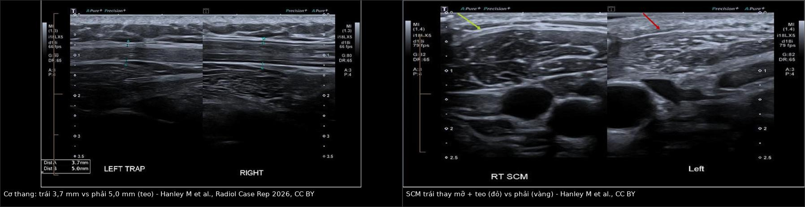
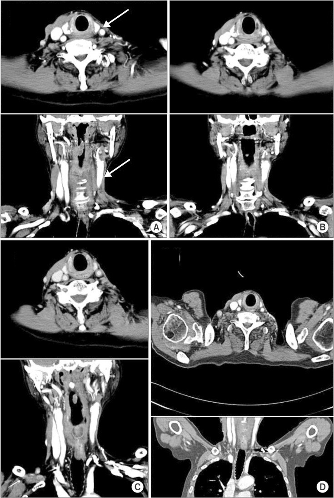
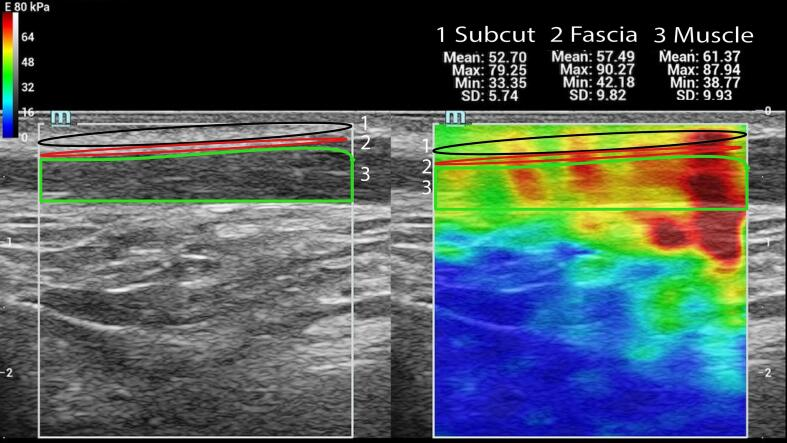
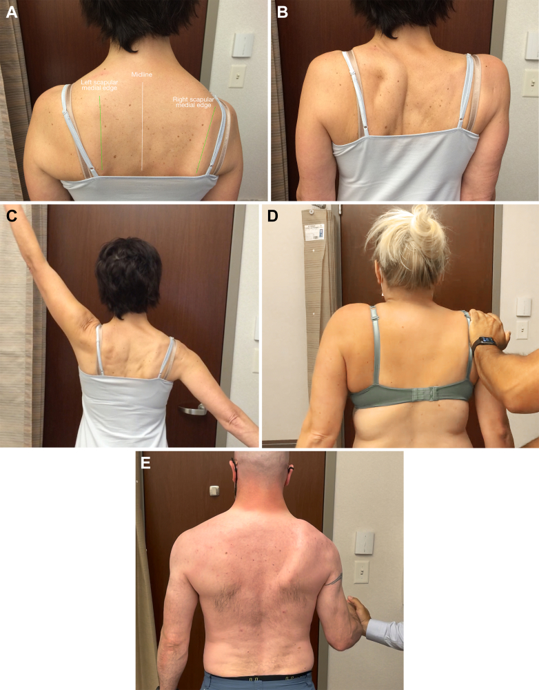
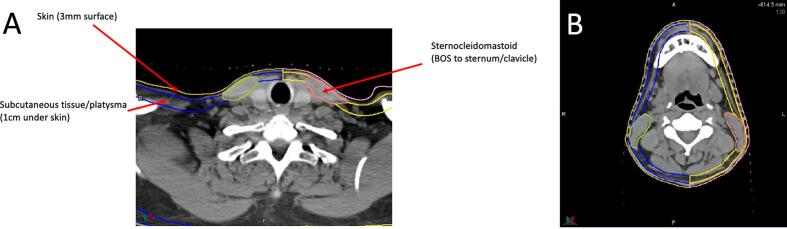
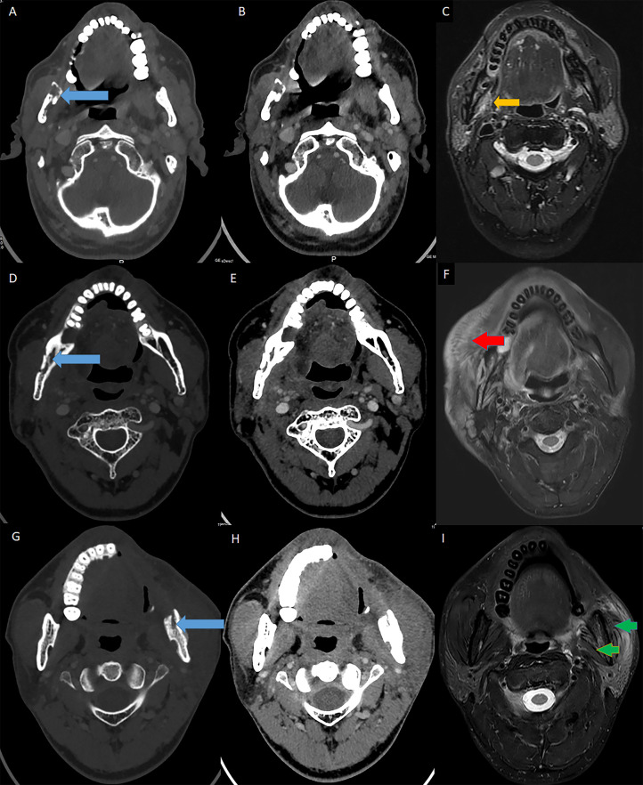

1763 — Xơ hóa mô mềm cổ sau xạ trị & hội chứng vai–cổ / Radiation-induced neck fibrosis & shoulder syndrome
Tags: pattern:xo-hoa-sau-xa pattern:day-da pattern:teo-co pattern:thay-mo pattern:han-che-van-dong vung:dau-co vung:co protocol:CT protocol:MRI protocol:sieu-am-SWE protocol:lieu-OAR score:RTOG score:CTCAE incidentaloma:khong
Mức chắc chắn (certainty): tổng hợp y văn (literature synthesis) — 1 nghiên cứu PRO–NTCP 95 bệnh nhân với mô hình Lyman–Kutcher–Burman cho da/mô dưới da/cơ ức đòn chũm (Clin Transl Radiat Oncol 2026, PMC13448427, CC BY-NC-ND), 1 đoàn hệ dọc 56 bệnh nhân đo độ cứng cơ bằng siêu âm đàn hồi sóng biến dạng (Cancers 2026, PMC13297288, CC BY), 1 nghiên cứu đối chứng 16 + 16 bệnh nhân với siêu âm đàn hồi (Phys Imaging Radiat Oncol 2026, PMC13241838, CC BY), 1 đoàn hệ ung thư vòm họng 36 bệnh nhân (Oncol Lett 2025, PMC12004034, CC BY-NC-ND), 1 nghiên cứu vai–cổ tiến cứu 96 bệnh nhân (Medicine 2015, PMC4554123, CC BY), 1 RCT bảo tồn level IIb (World J Surg Oncol 2025, PMC12261729, CC BY-NC-ND), 1 tổng quan hệ thống 67 nghiên cứu (Life 2025, PMC12112850, CC BY), 1 ca giải phẫu tử thi có CT (Radiat Oncol J 2015, PMC4707218, CC BY-NC), 1 tổng quan hình ảnh hậu trị (Br J Radiol 2024, PMC11573130, CC BY) và 1 loạt 47 ca hoại tử xương hàm có MRI mô mềm (Front Oncol 2021, PMC8113699, CC BY). Không có ca nguyên văn của nhóm — 3 ca trong quiz là ca dựng từ ảnh công bố, ghi rõ nguồn từng ảnh.
Câu chốt: "cứng cổ, dày da, teo cơ, đau vai" sau xạ không phải di chứng mơ hồ mà là xơ hóa do xạ (radiation-induced fibrosis, RIF) — một chuỗi TGF-β → nguyên bào cơ → collagen I/III làm mô dày, cứng, mất đàn hồi và teo. Ba con số phải thuộc: 30–50% người sống lâu sau xạ đầu cổ có xơ hóa có ý nghĩa lâm sàng (tới 69,4% ở đoàn hệ ung thư vòm họng); độ cứng cơ ức đòn chũm trên siêu âm đàn hồi 46,98 vs 28,10 kPa so với người không xạ và tăng 14–16% trong 12 tháng đầu; và trên kế hoạch xạ, TD50 của da là 40,2 Gy (không mổ) so với 8,4 Gy (đã mổ cổ) — nghĩa là một lần mổ cổ làm ngưỡng dung nạp da tụt gần 5 lần.
1. Tổng quan bệnh học – cơ chế hình ảnh
1.1 TẠI SAO mô cổ sau xạ lại dày, cứng rồi teo
- Định nghĩa: RIF là biến chứng muộn (> 90 ngày) của xạ trị, biểu hiện dày da, cứng mô dưới da, xơ hóa mạc và cơ, hạn chế quay cổ – nâng vai, phù bạch mạch và đau. Khởi phát 3–6 tháng, tiến triển trong 1–2 năm đầu rồi chững lại (PMC13297288). Một số tác giả ghi nhận > 50% bệnh nhân bị trong khoảng 1–8 năm sau điều trị (PMC13297288, dẫn nguồn tổng quan).
- Chuỗi sinh học (vì sao hình ảnh lại như vậy): xạ → tổn thương mao mạch + thiếu oxy mô → hoạt hóa TGF-β, TNF-α, interleukin → nguyên bào sợi biệt hóa thành nguyên bào cơ (myofibroblast) → tăng tổng hợp collagen I/III, ức chế men phân hủy collagen (MMP) và tăng ức chế mô (TIMP) → ma trận ngoại bào dày đặc, mô co rút. Hệ quả trên hình ảnh:
- CT: da dày, dải tăng đậm độ dạng lưới (reticular stranding) trong mô dưới da, mất các mặt phẳng mỡ giữa cơ và mạc, cơ giảm thể tích nhưng đậm độ tăng nhẹ; tổn thương ôm theo trường chiếu, không có khối.
- MRI: collagen làm T2 ngắn → tín hiệu T2 thấp (xơ), T1 thấp–trung tính; giai đoạn sớm còn phù → T2 cao; giai đoạn muộn thay mỡ → T1 cao, mất tín hiệu khi fat-sat. Mô xơ ngấm thuốc chậm, đều, không tạo khối.
- Siêu âm: mô dày lớp bì, tăng hồi âm, mất lớp mỡ dưới da, và tăng độ cứng (stiffness) đo được bằng siêu âm đàn hồi sóng biến dạng (shear-wave elastography, SWE) — đây là cách định lượng tốt nhất hiện có, vì độ cứng phản ánh mật độ liên kết chéo collagen, không phản ánh triệu chứng.
- Vì sao "cứng mà teo" không mâu thuẫn: sợi collagen thay thế nhu mô cơ và mỡ → thể tích giảm nhưng mô đặc và cứng hơn. Đây là lý do không được dùng "teo" để loại trừ xơ hóa, và ngược lại không dùng "dày" để chẩn đoán tái phát.
1.2 Số liệu định lượng phải thuộc
| Đại lượng | Con số | Nguồn |
|---|---|---|
| Xơ hóa cổ có ý nghĩa lâm sàng ở người sống lâu | 30–50% | PMC13448427 (dẫn tổng quan) |
| Ung thư vòm họng sau hóa–xạ (n = 36, liều u 68,64 Gy, trung vị 4 chu kỳ cisplatin 40 mg/m²) | 69,4% (25/36) xơ hóa cổ; biến chứng muộn chung 83,3%, chủ yếu độ ≤ 2 | PMC12004034 |
| Phân bố mức độ theo bộ câu hỏi PRO (n = 90, trung vị 24,5 tháng sau xạ) | 64,4% nhẹ (0–20 điểm) · 20,0% vừa (21–40) · 15,6% nặng (≥ 41) | PMC13448427 |
| Liều cơ ức đòn chũm trong thực hành | Dmean 57,5 Gy (IQR 55,3–60,3) · Dmax 73,6 Gy · V60 38,6% · V70 2,3% | PMC13448427 |
| TD50 (liều gEUD gây 50% nguy cơ) — da | 40,2 Gy (95% CI 34,1–50,7) nếu không mổ · 8,4 Gy (6,5–13,2) nếu đã mổ cổ | PMC13448427 |
| TD50 — mô dưới da | 40,9 Gy (37,8–45,5) không mổ · 13,5 Gy (10,0–24,1) đã mổ | PMC13448427 |
| TD50 — cơ ức đòn chũm | 70,9 Gy (68,2–76,2) không mổ · 81,8 Gy (66,5–109,4) đã mổ | PMC13448427 |
| Độ cứng cơ ức đòn chũm (SWE) so với người không xạ | 46,98 vs 28,10 kPa (trái) · 46,75 vs 21,52 kPa (phải); mạc: 46,41 vs 25,47 kPa | PMC13241838 |
| Tiến triển độ cứng trong 12 tháng (n = 56, vận tốc sóng biến dạng) | 4,12 → 4,38 → 4,32 → 4,76 → 4,92 m/s (1 tuần, 6 tuần, 12 tuần, 6 tháng, 12 tháng); +14% ở 6 tháng (p = 0,007), +16% ở 12 tháng (p = 0,012) | PMC13297288 |
| Triệu chứng tự khai so với độ cứng | Không tương quan trong cùng bệnh nhân (r = −0,13, p = 0,498) | PMC13297288 |
| Biên độ quay cổ | Giảm ~5° — không có ý nghĩa dù mô cứng hơn và mỏng hơn | PMC13241838 |
| Hội chứng vai (thang điểm vai UW-QoL, 100 = tốt nhất) | Xạ đơn thuần 96,3 · mổ cổ 71,6 · mổ + xạ 65,3 (hai nhóm mổ khác nhau p = 0,304) | PMC4554123 |
| Bảo tồn level IIb so với mổ cổ kinh điển (RCT, n = 32) | Tổn thương dây XI trên EMG: 50% vs 95%; hồi phục trên EMG/đo góc ở 6–12 tháng nhưng NDII vẫn khác biệt ở 12 tháng | PMC12261729 |
| Mổ cổ cải biên + vạt (n = theo nhóm) | 57,5% hạn chế vai lúc 3 tháng → 33,8% lúc 6 tháng sau phục hồi chức năng | PMC12112850 |
| Đo vòng cổ so với đo độ dày da bằng siêu âm | Vòng cổ ICC 0,958–0,994; độ dày da ICC 0,136–0,354 (không đáng tin) | PMC12110547 |
| Thời gian xuất hiện các biến chứng muộn khác trong cùng trường xạ | Hoại tử niêm mạc 6–12 tháng, trismus 12–18 tháng, hẹp/loét 1–10 năm | PMC11573130 |
1.3 "Hội chứng vai–cổ" là gì và vì sao phải tách khỏi xơ hóa cổ
- Hội chứng vai sau điều trị đầu cổ (shoulder syndrome) gồm: vai xệ, xương bả vai di lệch ra ngoài, hạn chế dạng tay, đau vai–cánh tay do mất chức năng cơ thang (thần kinh phụ XI) ± xơ hóa mô mềm vùng cổ bên. Ba nguyên nhân chồng lấp: (1) tổn thương dây XI trong mổ cổ, (2) xơ hóa cơ thang/mạc trong trường xạ, (3) bệnh lý cơ–xương vai cổ sẵn có (chóp xoay, cột sống cổ).
- Con số quyết định: xạ đơn thuần (không mổ) chỉ gây suy giảm nhẹ (UW-QoL 96,3 so với 100 trước điều trị, p = 0,046) và không làm nặng thêm vai ở người đã mổ cổ (71,6 → 65,3; p = 0,304) — nghĩa là ở bệnh nhân đã mổ cổ, thủ phạm chính là cuộc mổ, không phải tia (PMC4554123). Ngược lại, bảo tồn level IIb giảm tổn thương dây XI trên EMG từ 95% xuống 50% (PMC12261729).
- Hệ quả thực hành: đau vai ở bệnh nhân xạ đơn thuần phải tìm nguyên nhân khác trước khi quy cho xơ hóa; đau vai ở bệnh nhân mổ cổ + xạ thì mặc định là hội chứng sau mổ cổ, cần khám cơ thang và đo biên độ chứ không chỉ chụp cổ.
2. Mẫu hình + chẩn đoán phân biệt theo lớp mô và theo vị trí (Gamut)
- Cách đọc: luôn trả lời 4 câu trước khi gọi tên: (1) tổn thương có đúng trong trường xạ không? (2) có khối/mass effect không? (3) có đối xứng theo trục cổ không? (4) có hạn chế khuếch tán/tăng chuyển hóa không?
- Gamut theo lớp mô (từ nông đến sâu):
| Lớp | Mẫu hình thường gặp | Gamut chính |
|---|---|---|
| Da | Dày da, mất đàn hồi, giãn mạch, giảm sắc tố | Xơ hóa do xạ · viêm da mạn do xạ · phù bạch mạch · tái phát da (ung thư biểu mô) |
| Mô dưới da | Dải tăng đậm độ dạng lưới, mất lớp mỡ, dính da–cơ | Xơ hóa do xạ · phù bạch mạch · viêm mô tế bào · di căn da (carcinoma erysipeloides) |
| Mạc cổ – bao cảnh | Mô mềm đặc ôm quanh mạch cảnh, không tách được khỏi cơ | Xơ hóa "cổ đông cứng" (frozen neck) · tái phát hạch dính vỏ · huyết khối tĩnh mạch cảnh trong |
| Cơ ức đòn chũm / cơ vùng cổ | Teo + thay mỡ + đậm độ/tín hiệu tăng | Xơ hóa–teo do xạ · teo do mất thần kinh (XI, XII, V3) · myositis · tái phát xâm lấn cơ |
| Cơ thang / dây XI | Teo cơ thang, vai xệ, xương bả vai xoay ngoài | Hội chứng vai sau mổ cổ · xơ hóa cơ thang do xạ · tổn thương dây XI đơn thuần · bệnh lý chóp xoay |
| Mạch – bạch mạch | Dày bao quanh mạch, hẹp tĩnh mạch, phù mô | Xơ hóa quanh mạch · hẹp/huyết khối tĩnh mạch cảnh · phù bạch mạch · tái phát quanh mạch cảnh |
- Gamut theo mức độ (phân loại 3 bậc dùng trong mổ, PMC8113699): độ 1 = xơ hóa dưới da nhẹ, tĩnh mạch cảnh ngoài chưa hẹp; độ 2 = xơ hóa cơ trung bình, bắt đầu hẹp tĩnh mạch cảnh ngoài/động mạch mặt; độ 3 = "cổ đông cứng" — bao xơ dính liền không tách được, tĩnh mạch cảnh ngoài hẹp. Đây là thang lâm sàng – phẫu thuật, dùng để tiên lượng mức khó khi mổ lại và nguy cơ hoại tử vạt.
- Gợi nhớ 4 bước chống bỏ sót: "DA–MỠ–CƠ–DÂY" — Da (dày), Atrophy (teo cơ), Mỡ mất (mất lớp mỡ dưới da), Dây thần kinh (XI, XII, V3) — nếu chỉ nhìn "cứng cổ" sẽ bỏ sót hội chứng vai và bệnh thần kinh muộn.
3. Bảng so sánh phân biệt (ma trận đối chiếu)
| Thực thể (entity) | Hình ảnh điển hình (CT/MRI/US) | Chốt vào (rule-in) | Chốt loại (rule-out) | Gợi ý xác nhận |
|---|---|---|---|---|
| Xơ hóa mô mềm cổ do xạ (RIF) | Da dày, dải tăng đậm độ dạng lưới trong mô dưới da, mất mặt phẳng mỡ, cơ teo + thay mỡ; MRI T2 thấp, ngấm thuốc đều, không khối | Đúng trường xạ + đối xứng theo trục + không mass effect + DWI không hạn chế | Có khối, bờ không đều, xâm lấn mỡ cạnh hầu, hạch mới → không phải RIF | So phim trước xạ; SWE (46,98 vs 28,10 kPa); theo dõi 3–6 tháng |
| Tái phát u/hạch tại chỗ | Khối đặc lệch trục, bờ tua gai, ngấm thuốc mạnh, ADC thấp, FDG dương, lớn dần | Khối + lớn lên trên 2 lần chụp + ADC thấp/FDG dương | Xơ hóa đối xứng, ổn định ≥ 6 tháng, không hạn chế khuếch tán | MRI + DWI; PET/CT sau ≥ 12 tuần; sinh thiết chỉ khi có khối |
| Phù bạch mạch cổ (external lymphedema) | Dày da–dưới da lan tỏa, phù mềm, mô dưới da tăng hồi âm, không co kéo | Ấn lõm (pitting), giảm khi kê cao/đeo băng ép, vòng cổ tăng | Mô xơ rắn, không lõm, không đổi theo tư thế | Đo vòng cổ (ICC 0,958–0,994); đáp ứng điều trị |
| Sẹo xơ sau mổ cổ (không xạ) | Dải mô mềm theo đường mổ, co kéo da, khu trú, không theo trường xạ | Khu trú đúng đường mổ + không dày da lan tỏa | Lan tỏa theo trường chiếu + dày da ngoài đường mổ | Hỏi mốc mổ, so phim cũ |
| Hoại tử xương hàm do xạ lan mô mềm (ORN) | Tiêu xương, mảnh xương chết, phản ứng mô mềm quanh xương, có thể dò da–miệng | Tiêu xương + mảnh xương chết + dò ≥ 3 tháng, liều > 60 Gy | Xương nguyên vẹn, không dò | CT xương hàm lát mỏng; MRI mô mềm |
| Liệt cơ thang do tổn thương dây XI | Teo cơ thang một bên, vai xệ, xương bả vai xoay ngoài, dạng tay hạn chế | Vai xệ + xương bả vai di lệch + EMG dây XI | Teo cơ thang đối xứng do xơ hóa trường xạ hai bên | Khám lâm sàng (ảnh C), EMG, siêu âm dây XI |
| Đau vai do cột sống cổ / chóp xoay | Cột sống thoái hóa, gai, hẹp lỗ liên hợp; gân chóp xoay dày/rách | Đau theo nghiệm pháp, hạn chế động tác chủ động, hình ảnh khớp/gân | Không có bất thường cột sống/gân và đau đúng trường xạ | MRI cột sống cổ/khớp vai khi nghi ngờ |
| Nhiễm trùng mô mềm / viêm mô tế bào | Dày da, phù, khí trong mô, tăng đậm độ không theo trường xạ | Đỏ nóng, sốt, bạch cầu tăng, khí trong mô | Không sốt, không khí, đối xứng theo trường xạ | Lâm sàng + CRP; siêu âm tìm ổ dịch |

Trái: siêu âm cơ thang — bên trái 3,7 mm so với bên phải 5,0 mm (teo). Phải: cơ ức đòn chũm trái thay mỡ + teo (mũi tên đỏ) so với bên phải (mũi tên vàng). Nguồn: Hanley M et al., Radiol Case Rep 2026 (PMC12964213), CC BY. Ảnh ghép letterbox, giữ nguyên tỉ lệ.3.1 Ba dấu hiệu định lượng dùng để "chốt" trên hình ảnh
- Độ cứng (SWE): cơ ức đòn chũm sau xạ 46,98 kPa so với 28,10 kPa ở người không xạ; mạc 46,41 vs 25,47 kPa (PMC13241838). Theo thời gian, vận tốc sóng biến dạng 4,12 → 4,92 m/s sau 12 tháng (PMC13297288) — tăng dần đều, không nhảy bậc, nên một lần đo không đủ để chẩn đoán.
- Hình thái: dày da + mất lớp mỡ dưới da + teo cơ cùng lúc, đúng trường xạ, không khối — đây là bộ ba mô tả trong đoàn hệ ung thư vòm họng: "dày da và chắc mô, teo cơ, mất mỡ dưới da" ở 69,4% bệnh nhân (PMC12004034).
- Tính đối xứng theo trục: mô xơ ôm quanh trục cổ (trước–sau, hai bên), còn tái phát lệch trục, đẩy lệch mạch cảnh/khí quản. Đây là chốt loại mạnh nhất trên CT vì không cần đo.
4. Protocol chụp + hệ phân độ/điểm chuẩn hóa
4.1 Kế hoạch xạ: vẽ OAR mô mềm cổ (bắt buộc, đừng chỉ vẽ tuyến nước bọt)
- Ba cấu trúc phải vẽ (theo PMC13448427, Hình 1):
- Da (skin): dải 3 mm phía trong đường viền ngoài cơ thể.
- Mô dưới da + cơ bám da cổ (subcutaneous tissue/platysma): lớp 1 cm ngay dưới da, trừ da và cơ ức đòn chũm.
- Cơ ức đòn chũm (SCM): từ nền sọ đến xương ức/xương đòn.
- Ngưỡng liều đề xuất (giả thuyết, cần xác nhận tiền cứu):
- Đã mổ cổ: da V15 < 20%, mô dưới da V15 < 25%.
- Không mổ: cơ ức đòn chũm V70 < 25%, mô dưới da V65 < 2%; gEUD 30 Gy cho da/mô dưới da và 60 Gy cho cơ ức đòn chũm.
- TD50 tham chiếu: da 40,2 Gy / mô dưới da 40,9 Gy (không mổ); 8,4 / 13,5 Gy (đã mổ) — mổ cổ làm ngưỡng tụt mạnh.
- Lợi ích mô phỏng khi lập lại kế hoạch: NTCP xơ hóa giảm từ 27,9% → 11,6–17,8% (da), 70,2% → 8,0–15,1% (cơ ức đòn chũm), 41,6% → 10,6–19,4% (mô dưới da) khi hạ liều u từ 70 Gy xuống 56–63 Gy (PMC13448427) — bằng chứng gián tiếp rằng giảm liều mô mềm cổ là can thiệp dự phòng thật.
4.2 Chẩn đoán hình ảnh khi bệnh nhân đến vì "cứng cổ/đau vai"
- MRI cổ (ưu tiên): T1W, T2W fat-sat, T1W fat-sat sau tiêm, DWI (b = 0/800/1000) + ADC. Cần cả hai bên và cả trên–dưới ổ tổn thương để đánh giá tính đối xứng theo trục.
- CT cổ có cản quang: khi cần đánh giá mạch cảnh, hạch, xương hàm; cửa sổ mô mềm 1–2 mm. Đo độ dày da và đường kính cơ ức đòn chũm ở cùng mức đốt sống để so sánh hai bên và so phim cũ.
- Siêu âm: B-mode đo độ dày cơ/da, SWE đo độ cứng (kPa hoặc m/s) — cùng một vị trí, cùng một tư thế, vì độ cứng thay đổi theo điểm đo.
- PET/CT: chỉ đáng tin sau ≥ 12 tuần vì viêm mô sau xạ có thể dương giả; dùng Hopkins/NI-RADS để phân tầng nguy cơ.
- Đo chức năng (phải ghi vào hồ sơ, không chỉ mô tả ảnh): mở miệng tối đa (MIO), biên độ quay cổ, dạng tay chủ động, thang điểm vai (NDII/DASH/Constant), vòng cổ (ICC 0,958–0,994 — đáng tin hơn đo độ dày da bằng siêu âm, ICC chỉ 0,136–0,354).
4.3 Phân độ
- RTOG/EORTC (biến chứng muộn, mô mềm): độ 1 = dày da nhẹ, giảm đàn hồi; độ 2 = dày da rõ, co kéo, hạn chế vận động nhẹ; độ 3 = co kéo nặng, hạn chế vận động rõ; độ 4 = hoại tử/cần can thiệp.
- CTCAE v5 – fibrosis mô mềm: độ 1 = mô cứng nhẹ, không ảnh hưởng chức năng; độ 2 = hạn chế vận động vừa; độ 3 = hạn chế nặng, cần can thiệp.
- Ba bậc mô tả trong mổ (PMC8113699): độ 1 dưới da nhẹ → độ 2 xơ hóa cơ → độ 3 "cổ đông cứng".
flowchart TD
A[Cứng, dày mô mềm cổ sau xạ] --> B{Có khối hoặc lệch trục?}
B -->|Có| C[MRI + DWI + PET/CT sau 12 tuần]
C --> D{ADC thấp hoặc FDG dương?}
D -->|Có| E[Nghi tái phát: sinh thiết có định hướng]
D -->|Không| F[Theo dõi 3 tháng: xơ hóa tiến triển]
B -->|Không| G{Đúng trường xạ và đối xứng theo trục?}
G -->|Có| H[Xơ hóa do xạ: đo SWE, vòng cổ, MIO, biên độ vai]
G -->|Không| I[Tìm nguyên nhân khác: phù bạch mạch, nhiễm trùng, sẹo mổ, cột sống cổ]
H --> J{Có hạn chế vai hoặc teo cơ thang?}
J -->|Có| K[Khám dây XI, EMG, siêu âm dây thần kinh]
J -->|Không| L[Phục hồi chức năng: vận động, giãn mô, theo dõi 3-6 tháng]
5. Biến thể bình thường và cạm bẫy
- Xơ hóa không đối xứng là bình thường: trường xạ thường không đối xứng (một bên cổ liều cao hơn), nên bất đối xứng nhẹ đúng theo kế hoạch xạ không phải tái phát. Cần đối chiếu bản đồ liều trước khi kết luận.
- Phù T2 cao trong 3–6 tháng đầu: giai đoạn sớm mô xơ còn phù, T2 tăng tín hiệu và ngấm thuốc — rất dễ đọc thành "u tiến triển". Không sinh thiết trong mô xạ nếu không có khối, vì (a) mô xạ liền sẹo kém, nguy cơ hoại tử, (b) lấy mẫu sai vì xơ hóa xen kẽ u.
- "Khối giả" do xơ hóa: mô xơ co kéo tạo nốt đặc giả quanh mạch cảnh. Phân biệt bằng không mass effect, không hạn chế khuếch tán, ổn định ≥ 6 tháng.
- Đau vai ở bệnh nhân xạ đơn thuần: chỉ 4 bệnh nhân trong 96 ca báo suy giảm nhẹ, điểm vai 96,3/100 (PMC4554123) — đừng quy mọi đau vai cho xạ; khám cột sống cổ, chóp xoay, dây XI trước.
- Dùng "độ dày da" trên siêu âm làm chỉ số theo dõi: ICC 0,136–0,354, không đáng tin (PMC12110547). Dùng vòng cổ hoặc SWE cùng vị trí.
- Độ cứng tăng nhưng triệu chứng không tăng: cùng bệnh nhân r = −0,13 (p = 0,498) — điều trị theo triệu chứng và chức năng, không theo con số kPa.
- Teo cơ do xạ so với teo do mất thần kinh: cả hai đều teo + thay mỡ; phân biệt bằng phân bố theo dây (XI → cơ thang; XII → lưỡi; V3 → cơ nhai) và thời gian tiềm tàng; xem 1764 – bệnh thần kinh V3 sau xạ.
- Bỏ sót thứ hai (satisfaction of search): đã thấy xơ hóa rồi ngừng tìm hạch — luôn đọc lại toàn bộ chuỗi hạch theo NI-RADS (750).

Bốn mốc CT (A–D) của cùng bệnh nhân sau mổ cổ cải biên + xạ 63 Gy: teo cơ ức đòn chũm trái (mũi tên trắng) và giảm rõ lớp mỡ dưới da bên trái — mô xơ thay mỡ, không có khối. Nguồn: Kim J et al., Radiat Oncol J 2015 (PMC4707218), CC BY-NC.6. Tự lượng giá — Blind Quiz ngay trên trang tĩnh
Ca 1 — Nam 70 tuổi, ung thư sàn miệng trái đã mổ + xạ 63 Gy, 2 năm sau đến vì "cổ bên trái cứng và nhỏ lại". Nhìn 4 mốc CT, mô tả trước.
- Gợi ý lâm sàng: không sốt, không khối mới, da vùng cổ trái dày và khó véo.
- Câu hỏi: Cơ nào teo? Lớp mô nào biến mất? Có dấu hiệu nào của khối không? Ba chẩn đoán phân biệt và một dấu hiệu để loại tái phát?
Bấm để hiện đáp án (findings + chẩn đoán)
- Dấu hiệu: cơ ức đòn chũm trái teo (mũi tên trắng, lát cắt ngang và lát cắt trán), mất lớp mỡ dưới da vùng cổ trái, mô mềm còn lại đậm độ tăng nhẹ, không tạo khối, không đẩy lệch mạch cảnh.
- Chẩn đoán: xơ hóa – teo mô mềm cổ do xạ (RIF), đúng trường chiếu.
- Vì sao: collagen thay mỡ và sợi cơ → thể tích giảm nhưng đậm độ tăng, mặt phẳng mỡ mất; không có mass effect là chốt loại tái phát trên CT.
- Nguồn ảnh: Kim J et al., Radiat Oncol J 2015 (PMC4707218), CC BY-NC. Đây là ca tử thi trong bài gốc, dùng làm hình minh họa chuỗi thời gian.
Ca 2 — Nữ 58 tuổi, xạ hai bên cổ 66 Gy vì ung thư hạch vùng cổ, 14 tháng sau: cổ cứng, khó quay đầu. Siêu âm đàn hồi tại cơ ức đòn chũm cho kết quả dưới đây.

- Câu hỏi: Ba vùng được đo là gì? Vùng nào cứng nhất và vì sao? Ngưỡng nào giúp phân biệt với mô lành?
Bấm để hiện đáp án (findings + chẩn đoán)
- Dấu hiệu: ba vùng đo mô dưới da (1), mạc (2), cơ (3); giá trị trung bình 52,70 / 57,49 / 61,37 kPa — cơ cứng nhất.
- Chẩn đoán: xơ hóa cơ–mạc do xạ, mức độ nặng theo độ cứng.
- Ngưỡng tham chiếu: cơ ức đòn chũm sau xạ 46,98 kPa so với 28,10 kPa ở người không xạ; mạc 46,41 vs 25,47 kPa (PMC13241838) — mô xơ cứng gần gấp đôi.
- Cạm bẫy: độ cứng không tương quan với triệu chứng (r = −0,13) → đo để theo dõi, không để quyết định mức đau.
- Nguồn ảnh: Dapper H et al., Phys Imaging Radiat Oncol 2026 (PMC13241838), CC BY.
Ca 3 — Bệnh nhân sau mổ cổ trái + xạ, 8 tháng: vai trái xệ, không giơ tay lên đầu được. Ảnh chụp lâm sàng bên dưới.

- Câu hỏi: Dấu hiệu nào trên ảnh cho thấy mất chức năng cơ thang? Cơ nào bị mất chi phối? Phân biệt với xơ hóa cơ ức đòn chũm đơn thuần?
Bấm để hiện đáp án (findings + chẩn đoán)
- Dấu hiệu: khoảng cách đường giữa–bờ trong xương bả vai tăng (A), xương bả vai xoay ngoài và nhô ra sau (B), hạn chế dạng tay chủ động (C–E).
- Chẩn đoán: liệt cơ thang do tổn thương thần kinh phụ (XI) — thành phần "hội chứng vai" của cổ sau điều trị.
- Phân biệt: xơ hóa cơ ức đòn chũm gây cứng cổ, hạn chế quay cổ, không gây xệ vai/xoay xương bả vai; hội chứng vai do dây XI gây mất dạng tay và đau vai.
- Con số: ở bệnh nhân đã mổ cổ, điểm vai UW-QoL 65,3 (mổ + xạ) so với 96,3 (xạ đơn thuần) — cuộc mổ là yếu tố chính, không phải tia (PMC4554123).
- Nguồn ảnh: O'Driscoll J et al., JSES Rev Rep Tech 2024 (PMC11329012), CC BY-NC-ND — ca minh họa liệt cơ thang trong bài tổng quan, không phải bệnh nhân xạ; ảnh dùng nguyên bản, không cắt/ghép.

Ba OAR mới phải vẽ khi lập kế hoạch xạ đầu cổ: da 3 mm, mô dưới da + cơ bám da cổ 1 cm, cơ ức đòn chũm từ nền sọ đến xương ức/xương đòn. Nguồn: Azzam GA et al., Clin Transl Radiat Oncol 2026 (PMC13448427), CC BY-NC-ND — ảnh nguyên bản, không cắt/ghép.
CT (A, B, D, E, G, H) và MRI (C, F, I) ở bệnh nhân hoại tử xương hàm do xạ: ngoài tổn thương xương, mô cơ lân cận có phì đại, phù (T2 sáng) và teo thay mỡ — chính là phổ "xơ hóa mô mềm do xạ" mà bài này bàn. Nguồn: Ma C et al., Front Oncol 2021 (PMC8113699), CC BY.Bài liên quan chéo
- 700 – Tổng quan Đầu Mặt Cổ
- 1761 – Trismus sau xạ trị đầu cổ (xơ hóa cơ nhai — cùng chuỗi RIF nhưng khác trục chức năng)
- 1764 – Bệnh thần kinh V3 sau xạ trị đầu cổ (teo cơ do mất thần kinh, phân biệt với teo do xơ hóa)
- 1684 – Nuốt khó sau xạ trị đầu cổ (cùng trường xạ, cùng cơ chế xơ hóa)
- 750 – Hạch cổ & NI-RADS (phân tầng hạch sau điều trị)
Ảnh
- 6 ảnh + 1 ảnh ghép; nguồn và giấy phép từng ảnh trong
images/CREDITS.md. - Ảnh
1763_vai-lenh_MR_PMC11329012.jpgvà1763_oar-contour_CT_PMC13448427.jpglà CC BY-NC-ND → dùng nguyên bản, không crop, không ghép. - Không có ảnh open-access nào chụp đúng "cổ đông cứng độ 3" của bệnh nhân xạ → bài không bịa ảnh, dùng ảnh minh họa từng cơ chế và ghi rõ nguồn từng ảnh.
Không dùng để chẩn đoán độc lập khi chưa có người hướng dẫn.